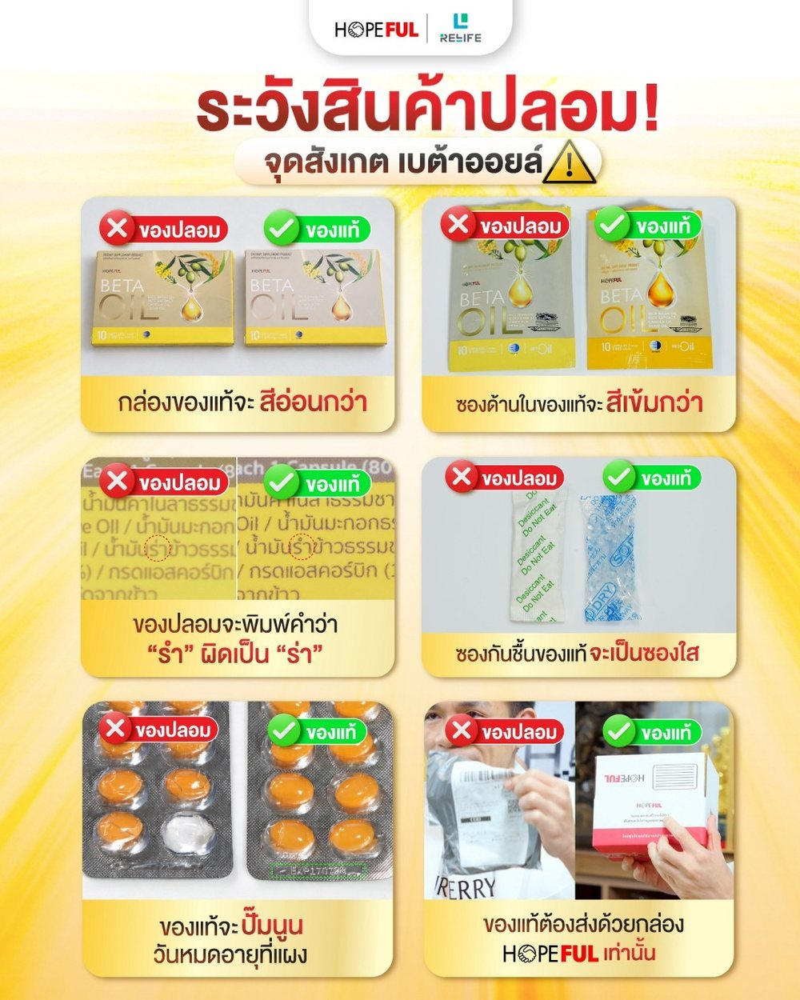
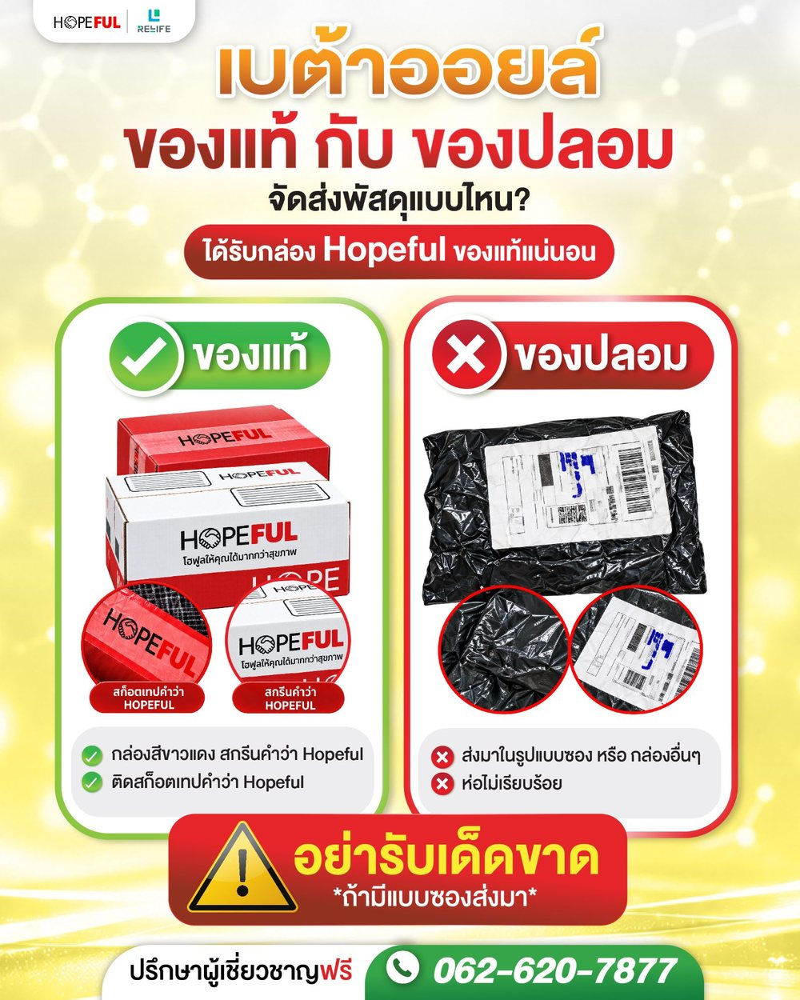
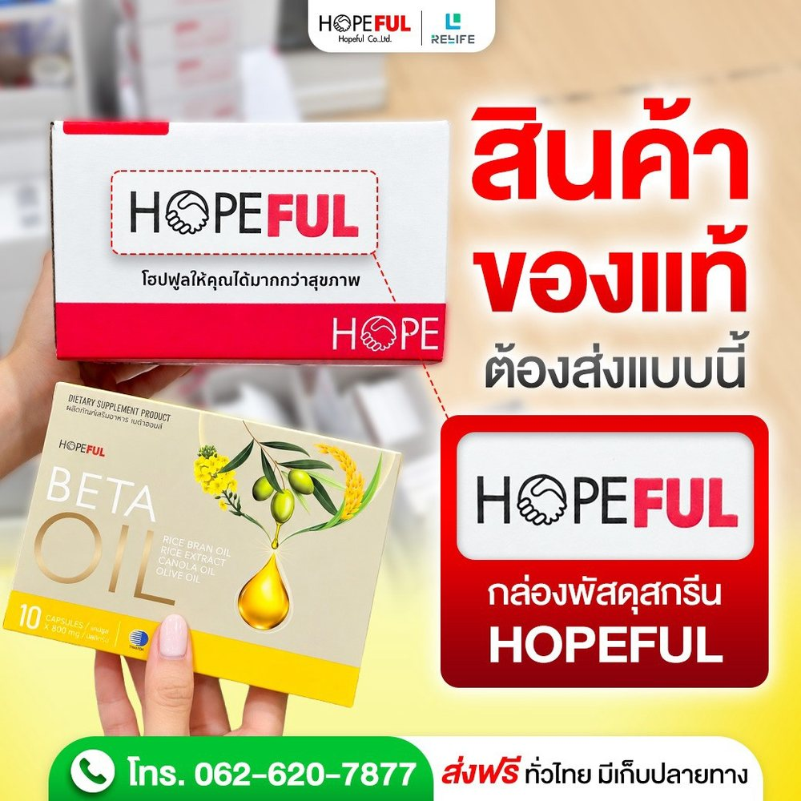

เบต้าออยล์ (BETA OIL) ของแท้ ของปลอม ดูยังไง? 6 จุดสังเกตก่อนซื้อ
เผยแพร่ 2026-11-09 · โดย Hopeful Relife
วิธีดูเบต้าออยล์ของแท้กับของปลอม 6 จุด ทั้งกล่อง ซอง ฉลาก ซองกันชื้น แผง และกล่องพัสดุ ซื้อมาแล้วไม่แน่ใจ ส่งรูปให้ทีมงานช่วยดูได้
เบต้าออยล์ (BETA OIL) ของแท้ดูได้จาก 6 จุด คือ สีกล่อง สีซองด้านใน ตัวสะกดบนฉลาก ซองกันชื้น วันหมดอายุบนแผง และกล่องพัสดุ HOPEFUL วิธีที่ปลอดภัยที่สุดคือสั่งซื้อจากตัวแทนจำหน่ายที่มีบัตรตัวแทนถูกต้องเท่านั้น
วิธีดูเบต้าออยล์ของแท้กับของปลอม 6 จุด

- สีกล่อง: กล่องของแท้มีสีอ่อนกว่า
- ซองด้านใน: ซองของแท้มีสีเข้มกว่า
- ตัวสะกดบนฉลาก: ของปลอมพิมพ์คำว่า "รำ" ใน "น้ำมันรำข้าว" ผิดเป็น "ร่า"
- ซองกันชื้น: ของแท้เป็นซองใส
- แผงแคปซูล: ของแท้มีวันหมดอายุแบบปั๊มนูนที่แผง
- กล่องพัสดุ: ของแท้จัดส่งด้วยกล่อง HOPEFUL เท่านั้น
เรื่องสีอาจดูต่างกันตามแสงและหน้าจอ จึงควรดูหลายจุดประกอบกัน ไม่ตัดสินจากจุดเดียว
เบต้าออยล์ของแท้จัดส่งแบบไหน
ของแท้จัดส่งด้วยกล่องสีขาวแดง สกรีนคำว่า HOPEFUL และติดสก็อตเทปคำว่า HOPEFUL

ถ้าสินค้าส่งมาแบบซอง อยู่ในกล่องอื่น หรือห่อไม่เรียบร้อย ไม่ควรรับพัสดุนั้น

ซื้อเบต้าออยล์ของแท้ได้ที่ไหน
HOPEFUL ประกาศยกเลิกการจำหน่ายทาง Lazada, Shopee และ TikTok เพื่อป้องกันของปลอม และให้สั่งซื้อจากตัวแทนจำหน่ายที่มีบัตรตัวแทนถูกต้องเท่านั้น
Hopeful Relife ดำเนินการโดย บริษัท รีไลฟ์ โซลูชั่นส์ จำกัด เป็นตัวแทนจำหน่าย รหัสตัวแทน VIP0083 ดูบัตรตัวแทนและหนังสือรับรองได้ที่หน้าซื้อ HOPEFUL ของแท้ หรือสั่งซื้อได้ที่หน้า BETA OIL
ซื้อเบต้าออยล์มาแล้วไม่แน่ใจว่าของแท้ไหม ให้เราช่วยดูได้เลย
ถ้าซื้อเบต้าออยล์มาแล้วไม่แน่ใจว่าเป็นของแท้หรือของปลอม ทักมาให้ทีมงานช่วยดูได้เลย แค่ถ่ายรูปส่งมา เราดูให้ได้ เพราะจุดสังเกตเห็นได้ชัด
ส่งรูปเหล่านี้มาทาง LINE
- รูปกล่องด้านหน้าและด้านหลัง
- รูปซองด้านใน ซองกันชื้น และแผงแคปซูลที่เห็นวันหมดอายุ
- รูปกล่องหรือถุงพัสดุที่ได้รับ
- ซื้อมาจากร้านหรือช่องทางไหน
💬 ทัก LINE @926xrxzj ให้ทีมงานช่วยดู
📞 หรือโทร 062-620-7877 · ดูช่องทางติดต่อทั้งหมด
ถ้าสงสัยว่าได้เบต้าออยล์ปลอมควรทำอย่างไร
- หยุดรับประทานไว้ก่อน
- เก็บกล่อง ซอง แผง และถุงพัสดุไว้เป็นหลักฐาน
- ถ่ายรูปสินค้าและจุดที่สงสัย แล้วส่งให้ทีมงานช่วยดู
คำถามที่พบบ่อยเรื่องเบต้าออยล์ของปลอม
เบต้าออยล์ที่ส่งมาเป็นซองเป็นของปลอมไหม
ของแท้จัดส่งด้วยกล่อง HOPEFUL เท่านั้น ถ้าส่งมาแบบซองไม่ควรรับพัสดุ
ซื้อเบต้าออยล์ใน Shopee, Lazada หรือ TikTok ได้ไหม
HOPEFUL ประกาศยกเลิกการจำหน่ายทาง Lazada, Shopee และ TikTok เพื่อป้องกันของปลอม จึงควรซื้อจากตัวแทนที่มีบัตรตัวแทนถูกต้อง
วันหมดอายุของเบต้าออยล์ของแท้อยู่ตรงไหน
ของแท้มีวันหมดอายุแบบปั๊มนูนที่แผงแคปซูล
ซองกันชื้นของเบต้าออยล์ของแท้เป็นแบบไหน
ซองกันชื้นของแท้เป็นซองใส
ส่งรูปให้ช่วยดูว่าเป็นของแท้ได้ไหม
ได้ ถ่ายรูปกล่อง ซอง แผงแคปซูล และพัสดุ แล้วส่งให้ทีมงานทาง LINE @926xrxzj
ก่อนซื้ออาหารเสริมทุกครั้ง ควรดูข้อมูลบนฉลากด้วย อ่านวิธีตรวจฉลากได้ที่สอนอ่านฉลากอาหารเสริม ใน 5 นาที
อ่านข้อมูลผลิตภัณฑ์ที่เกี่ยวข้อง: BETA OIL (เบต้า ออยล์)
บทความนี้มีวัตถุประสงค์เพื่อให้ความรู้ทั่วไปเท่านั้น ไม่ใช่คำแนะนำทางการแพทย์ หากมีข้อสงสัยเกี่ยวกับสุขภาพ ควรปรึกษาแพทย์หรือเภสัชกร